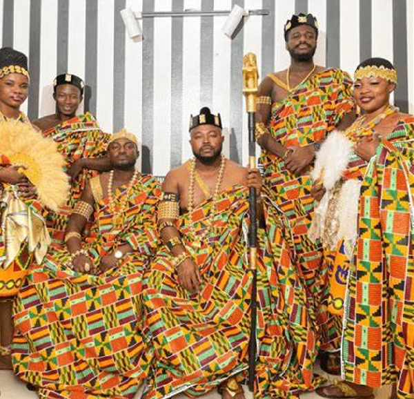

The Akan language reflects the long history, customs and religious beliefs of the Ghanaian people. The traditions of naming children in Ghana are very interesting. For example, the new family members can be named after the day of the week or after the significant event happened when they have been born. “While western names are predictable, African names are generally not predictable, for until the child is born and under what circumstances it is born, the name cannot be determined with accuracy” (Agyekum 2006, p. 208). For instance, if the child is born during the war, they can be named after the historic event. If you meet the Akan man with the name Bekṍe, it means that he was born during the war. Similarly, the parents can name their children after the day of the week, when they have been born. According to the Akan traditions, the father chooses the name for the child. However, the mother can also participate in the process.
